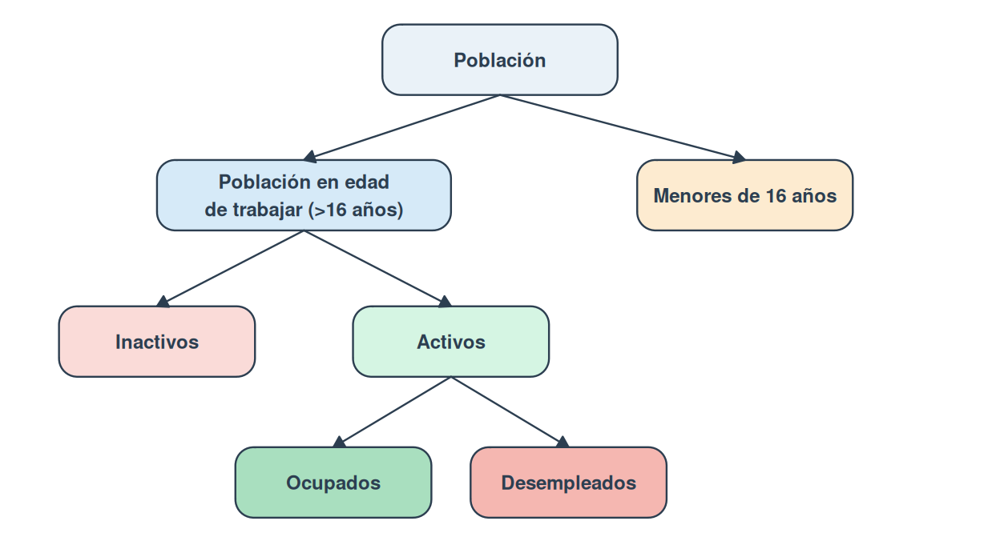
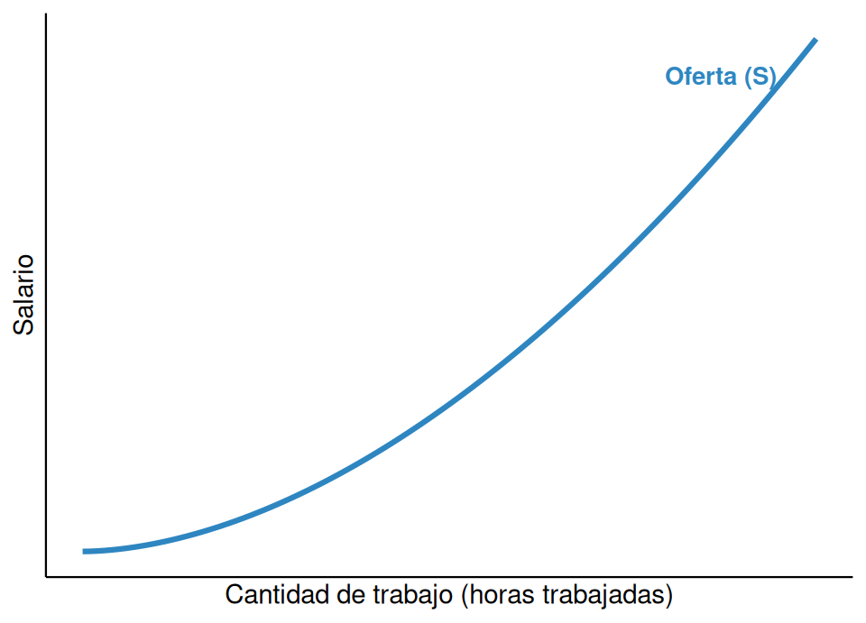
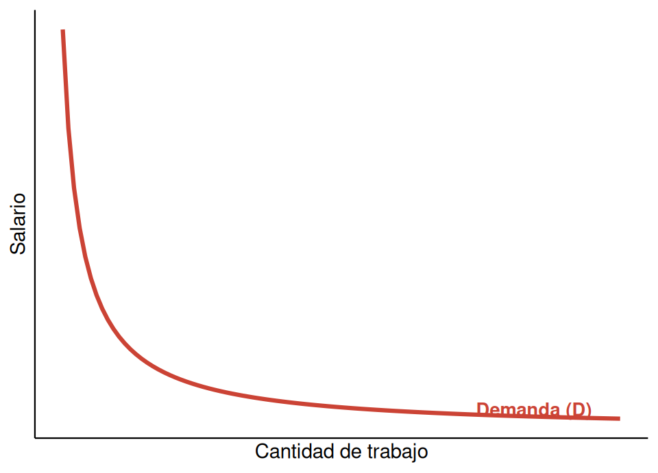

| Excluibles | No excluibles | |
|---|---|---|
| Rivales | Bienes privados (ropa, alimentos) | Recursos comunes (bancos de pesca, pastos) |
| No rivales | Bienes de club (Netflix, autopistas de peaje) | Bienes públicos (alumbrado, defensa nacional) |
7 Los fallos del mercado y el mercado de trabajo
7.1 Los fallos del mercado y la intervención del Estado
7.1.1 La eficiencia del mercado y sus límites
Existen diferencias notables entre los distintos modelos económicos del mundo. Mientras que en algunas economías de tradición liberal servicios como la sanidad o la educación superior se gestionan mayoritariamente en el sector privado, en países con un Estado de bienestar desarrollado —como España— el sector público asume buena parte de su provisión para garantizar el acceso universal. Para entender por qué el Estado interviene de forma tan activa conviene analizar el concepto de fallo de mercado.
Según la economía clásica, si los agentes actúan guiados por su propio interés, el libre mercado funciona como una mano invisible que maximiza el bienestar social: si los consumidores no están satisfechos, dejan de comprar, y esto obliga a las empresas a ser eficientes. Sin embargo, esta idea exige condiciones que rara vez se cumplen en la realidad. ¿Qué ocurre si una empresa opera en monopolio? ¿O si producir un bien genera contaminación que perjudica a terceros? En estos casos, la búsqueda del beneficio individual no conduce automáticamente al bienestar social.
NotaDefinición
Un fallo de mercado es cualquier situación en la que el mecanismo del libre mercado no asigna los recursos de manera eficiente o no alcanza un resultado socialmente deseable. Es la principal justificación teórica de la intervención del Estado en la economía.
Se reconocen cinco grandes fallos de mercado: la competencia imperfecta (monopolios y oligopolios que restringen la producción y elevan los precios), las externalidades (efectos sobre terceros no reflejados en el precio), la existencia de bienes públicos (que el sector privado no tiene incentivos para producir), la desigualdad en la distribución de la renta, y la inestabilidad de los ciclos económicos.
Para corregir estos fallos, el Estado cumple tres funciones. La función asignativa busca la eficiencia, corrigiendo la competencia imperfecta, proveyendo bienes públicos y regulando externalidades. La función distributiva busca la equidad, mediante impuestos progresivos y transferencias. La función estabilizadora busca la estabilidad macroeconómica, suavizando los ciclos económicos con política fiscal y monetaria.
7.1.2 La competencia imperfecta
NotaDefinición
Un mercado presenta competencia imperfecta cuando una o varias empresas tienen poder de mercado, es decir, la capacidad de influir artificialmente en el precio de un bien. Como resultado, se produce menos cantidad y a un precio mayor de lo que la sociedad desearía.
Un ejemplo habitual son los sectores oligopolísticos, como el de las telecomunicaciones, donde un número reducido de operadores concentra la mayor parte del mercado. La falta de competencia genera cuatro efectos negativos: precios más elevados, al no existir alternativas que obliguen a bajarlos; menor calidad, porque no hay presión competitiva para mejorar; menor innovación, ya que las empresas dominantes no necesitan invertir en I+D+i para mantener sus beneficios; y menor creación de empleo, porque una menor producción requiere menos trabajadores.
Para corregir este fallo, el Estado limita el poder de mercado mediante la regulación. En España, la Comisión Nacional de los Mercados y la Competencia (CNMC) es el organismo encargado de esta función, que actúa en cuatro frentes: sancionar los cárteles, acuerdos secretos entre empresas para fijar precios; prevenir el abuso de posición dominante; controlar las fusiones y concentraciones para evitar que una empresa resultante alcance un tamaño que ponga en riesgo la competencia; y eliminar barreras de entrada que impiden a nuevas empresas acceder a un mercado, como ocurrió con la liberalización del transporte ferroviario de pasajeros en España en 2021.
7.1.3 Las externalidades
NotaDefinición
Una externalidad surge cuando la actividad de producción o consumo de un agente genera efectos, positivos o negativos, sobre terceros que no participan en la transacción, sin que esos efectos se reflejen en el precio del bien.
Las externalidades negativas se producen cuando una actividad genera costes sociales que no asume quien los provoca, ya sea en la producción (una fábrica que contamina un río, perjudicando a la pesca local) o en el consumo (el humo del tabaco en espacios compartidos). Como el mercado no obliga a internalizar esos costes, las empresas producen a un precio artificialmente bajo, lo que genera sobreproducción: se fabrica más cantidad de la que sería socialmente óptima.
Las externalidades positivas se producen cuando una actividad beneficia a terceros sin que quien la genera reciba una compensación completa por ello, como ocurre con la inversión en I+D o con la educación, que benefician a toda la sociedad además de a quien invierte. Como el mercado no retribuye ese beneficio adicional, se genera subproducción: se produce menos de lo que la sociedad desearía.
Para corregir las externalidades negativas, el Estado dispone de tres instrumentos: la regulación directa, mediante prohibiciones y restricciones (zonas de bajas emisiones, prohibición de fumar en espacios cerrados) o límites máximos y mercados de derechos de emisión (licencias transferibles de contaminación); y los impuestos pigouvianos, que gravan la producción o el consumo del bien contaminante para igualar el coste privado con el coste social, como los impuestos especiales sobre los hidrocarburos o el tabaco.
Para fomentar las externalidades positivas, el Estado utiliza subvenciones y transferencias públicas (becas de estudio, financiación de proyectos de I+D+i) y la regulación protectora, cuyo instrumento principal es el sistema de patentes: un monopolio legal temporal, generalmente de veinte años, que permite al inventor capturar el beneficio de su innovación y así incentivar la inversión en investigación.
7.1.4 Los bienes públicos
Existen infraestructuras esenciales —el alcantarillado, el alumbrado público— que el sector privado no encuentra rentable proveer, porque no puede cobrar individualmente por su uso. Para entender este fallo de mercado conviene distinguir dos propiedades de los bienes.
Un bien es excluible cuando se puede impedir su uso a quien no ha pagado por él. Un bien es rival en el consumo cuando el uso de una persona reduce la disponibilidad para las demás.
Combinando ambos criterios, la Tabla 7.1 distingue cuatro categorías: los bienes privados (excluibles y rivales, la mayoría de los bienes de mercado), los bienes públicos (no excluibles y no rivales, como el alumbrado público o la defensa nacional), los recursos comunes (no excluibles pero rivales, como los bancos de pesca) y los bienes de club (excluibles pero no rivales, como una plataforma de streaming).
El problema de los bienes públicos es el del consumidor parásito (free rider): como no se puede excluir a nadie de su disfrute, muchas personas prefieren no pagar por ellos esperando que otros lo hagan, lo que impide que el mercado los provea de forma rentable.
Algunos bienes cambian de categoría según el nivel de uso: son los bienes congestionables. Una carretera vacía se comporta como un bien público, pero si el tráfico aumenta hasta generar congestión, el bien se vuelve rival, ya que la entrada de un vehículo adicional perjudica a los demás conductores. Algo similar ocurre en la educación: un aula con pocos alumnos es un servicio no rival, pero si se supera un ratio máximo, la calidad de la enseñanza para cada estudiante se resiente.
El Estado garantiza la provisión de bienes públicos mediante producción pública directa (justicia, seguridad, buena parte de la sanidad y la educación) o mediante contratación externa, financiando el bien con fondos públicos pero encargando su ejecución a empresas privadas (grandes infraestructuras). Para los recursos comunes, evita su sobreexplotación —la llamada «tragedia de los comunes»— mediante regulación y cuotas (vedas de pesca, límites de emisión) o mediante la asignación de derechos de propiedad, que da a un titular el incentivo de gestionar el recurso de forma sostenible.
7.1.5 La desigualdad en la distribución de la renta
El mercado reparte la renta según tres criterios: la propiedad de los factores de producción (quien posee tierra o capital recibe alquileres o intereses además de, en su caso, un salario), la escasez de los factores (un factor escaso y muy demandado se remunera mejor) y la productividad marginal (se remunera según el valor añadido al proceso productivo).
ImportanteEficiencia frente a equidad
Un mercado puede ser eficiente —producir lo que la sociedad demanda al menor coste— y, al mismo tiempo, inequitativo, repartiendo el resultado de esa producción de forma muy desigual. La eficiencia no garantiza la justicia social.
Existen además fallos estructurales que impiden una distribución equitativa. Algunos colectivos quedan excluidos del mercado: personas en situación de dependencia, desempleados estructurales o trabajadores en baja temporal, que sin intervención del Estado carecerían de renta. El trabajo reproductivo —tareas domésticas y de cuidados— genera un valor social enorme que el mercado no remunera. Y la desigualdad de oportunidades hace que el entorno familiar, el acceso a una educación de calidad o los contactos sociales condicionen las posibilidades de una persona, tendiendo a perpetuar la desigualdad de generación en generación si el Estado no interviene.
Tres factores determinan buena parte de esta desigualdad, con independencia del esfuerzo individual: la herencia (el patrimonio material y el acceso a una formación de calidad, que sin financiación pública sería prohibitiva para muchas familias), la capacidad innata (el mercado remunera el talento escaso, no el esfuerzo) y la suerte (contingencias personales, el entorno socioeconómico o el riesgo empresarial, factores que el individuo no siempre puede controlar).
7.1.6 Las políticas distributivas
Para mitigar la desigualdad, el Estado persigue cuatro objetivos: garantizar la seguridad económica ante contingencias como el desempleo o la jubilación; asegurar un nivel mínimo de bienestar; reducir la pobreza y la exclusión; y promover la igualdad de oportunidades.
TipLa pobreza relativa
En la Unión Europea se utiliza el concepto de pobreza relativa: el umbral de pobreza se sitúa en el 60 % de la mediana de los ingresos de la población. En España, en torno al 20 % de la población vive por debajo de ese umbral, lo que no siempre implica carecer de vivienda, sino no poder participar de los estándares de vida mínimos de la sociedad.
El Estado utiliza tres instrumentos. El sistema tributario distingue entre impuestos indirectos como el IVA, considerados regresivos porque las familias con menos ingresos destinan una proporción mayor de su renta al consumo básico, e impuestos directos como el IRPF, que pueden diseñarse de forma progresiva. El gasto público y las transferencias incluyen pagos directos (pensiones, prestaciones por desempleo) y servicios públicos gratuitos o subvencionados (educación, sanidad). Y la intervención directa en el mercado incluye medidas como el salario mínimo interprofesional o los precios máximos en bienes de primera necesidad.
| Base liquidable | Tipo marginal |
|---|---|
| De 0 a 12 450 € | 19 % |
| De 12 450 a 20 200 € | 24 % |
| De 20 200 a 35 200 € | 30 % |
| De 35 200 a 60 000 € | 37 % |
| De 60 000 a 300 000 € | 45 % |
| Más de 300 000 € | 47 % |
El IRPF es un impuesto directo, personal y progresivo. Como muestra la Tabla 7.2, los tipos son marginales: una persona con una base liquidable de 25 000 € no paga el 30 % sobre el total, sino el 19 % sobre los primeros 12 450 €, el 24 % sobre el siguiente tramo, y así sucesivamente. Esto garantiza que siempre compense obtener un salario mayor.
AdvertenciaEl debate entre eficiencia y equidad: el «cubo que gotea»
El economista Arthur Okun comparó la redistribución de la renta con trasladar dinero en un cubo que gotea: se llena con los impuestos de quienes más tienen, pero parte del dinero se pierde por el camino, en costes administrativos y en la pérdida de incentivos que puede producirse si los impuestos son muy altos o las ayudas muy generosas. Un caso concreto es la trampa de la pobreza: si al aceptar un empleo una persona pierde el acceso a ciertas ayudas sociales por un importe mayor que su nuevo salario neto, queda en una situación peor que antes, lo que desincentiva la búsqueda de empleo.
7.2 El mercado de trabajo
7.2.1 Conceptos fundamentales del mercado de trabajo
Para analizar el mercado de trabajo es necesario clasificar a la población según su relación con la actividad económica. Esta clasificación permite estudiar la oferta de trabajo y los niveles de empleo y desempleo de un país.
La población en edad de trabajar es el conjunto de personas que, según la legislación vigente, tienen capacidad legal para incorporarse a un puesto de trabajo; en España, esta edad se fija en los 16 años. Pertenecer a este grupo es la condición necesaria para ser clasificado como activo o inactivo: quienes no han alcanzado esa edad no se contabilizan en las estadísticas laborales.
NotaDefinición
La población activa, o fuerza laboral, comprende a todas las personas en edad de trabajar que desean participar en el mercado de trabajo, ya sea porque tienen un empleo o porque lo están buscando activamente.
Dentro de la población activa se distinguen dos subgrupos: la población ocupada, formada por quienes tienen un empleo remunerado —por cuenta ajena (asalariados) o por cuenta propia (autónomos)—, y la población desempleada o parada, formada por quienes, estando disponibles para trabajar y buscando activamente un empleo, no lo encuentran. El criterio de búsqueda activa es lo que distingue a una persona desempleada de una inactiva.
La población inactiva engloba a quienes, estando en edad de trabajar, no están empleados ni buscan empleo y, por tanto, no forman parte de la oferta laboral: estudiantes dedicados exclusivamente a su formación, personas jubiladas, personas dedicadas al cuidado del hogar sin remuneración, personas con una incapacidad que les impide trabajar y personas que realizan trabajo voluntario no remunerado.

7.2.1.1 Principales indicadores del mercado de trabajo
El análisis del mercado laboral se apoya en tasas que expresan los agregados demográficos en términos relativos, lo que facilita la comparación a lo largo del tiempo y entre países.
La tasa de actividad mide la proporción de la población en edad de trabajar que forma parte de la fuerza de trabajo:
\[\text{Tasa de actividad} = \frac{\text{Población activa}}{\text{Población en edad de trabajar}} \times 100\]
Una tasa de actividad elevada indica una mayor disponibilidad de recursos humanos para producir bienes y servicios: una tasa del 60 % significa que 60 de cada 100 personas en edad legal de trabajar están empleadas o buscando empleo activamente.
La tasa de desempleo o tasa de paro es el indicador más utilizado para medir la incidencia del paro. Se calcula sobre la población activa, no sobre la población total, porque mide la incapacidad del mercado para dar empleo a quienes lo desean y lo buscan:
\[\text{Tasa de paro} = \frac{\text{Población desempleada}}{\text{Población activa}} \times 100\]
Una tasa de paro del 10 % significa que 10 de cada 100 personas de la fuerza laboral no encuentran un puesto de trabajo.
TipPara saber más: la tasa de asalarización
La tasa de asalarización mide el porcentaje que representan los trabajadores por cuenta ajena sobre el total de la población ocupada:
\[\text{Tasa de asalarización} = \frac{\text{Número de asalariados}}{\text{Total de ocupados}} \times 100\]
Una tasa de asalarización alta —por encima del 85-90 %— es propia de economías con grandes empresas y un mercado laboral muy estructurado; una tasa más baja sugiere mayor peso del autoempleo, las pequeñas empresas familiares o sectores como la agricultura. En España, el peso de los trabajadores autónomos ha sido tradicionalmente superior a la media europea.
7.2.2 Oferta y demanda de trabajo
En el mercado de trabajo, los términos «oferta» y «demanda» tienen un significado técnico preciso: son los individuos y las familias quienes ofrecen su trabajo a cambio de un salario, y son las empresas quienes lo demandan, porque necesitan contratar trabajadores para sus procesos productivos.
7.2.2.1 La oferta de trabajo
NotaDefinición
La oferta de trabajo es la cantidad total de horas de trabajo que el conjunto de las familias de una economía está dispuesto a ofrecer a las empresas para cada nivel salarial.
Esta decisión depende de tres factores. El salario es el principal determinante: los individuos ofrecen su tiempo a cambio de una remuneración, renunciando a otras actividades como el ocio o la formación (su coste de oportunidad); en general, un salario más alto incentiva a más personas a trabajar y a los trabajadores existentes a ofrecer más horas. El volumen de la población activa también condiciona la oferta: el envejecimiento de la población tiende a reducirla, mientras que fenómenos como la incorporación masiva de la mujer al mercado laboral la han ampliado notablemente en las últimas décadas. Por último, el tamaño de la población determina la base demográfica de la que surge la población activa; los flujos migratorios pueden tener un impacto considerable, como ocurrió en España en los años previos a 2008, cuando la inmigración elevó la población de 40 a 46 millones de habitantes.

La curva de oferta de trabajo tiene, en general, pendiente positiva: a medida que sube el salario, aumenta la cantidad de trabajo ofrecida. Esta relación se explica por el efecto sustitución: cuanto mayor es el salario, más caro resulta el ocio en términos de lo que se deja de ganar, por lo que el individuo sustituye ocio por trabajo.
Sin embargo, a niveles salariales muy altos puede entrar en juego el efecto renta: un salario muy elevado hace que el individuo se sienta más rico y pueda permitirse trabajar menos horas para disfrutar de más ocio, un bien que también desea consumir. Cuando el efecto renta supera al efecto sustitución, la curva se «dobla hacia atrás» y adquiere pendiente negativa a partir de cierto punto.
Conviene distinguir entre un movimiento a lo largo de la curva —provocado por un cambio en el salario— y un desplazamiento de toda la curva, provocado por cambios en la población activa o en el tamaño de la población: un aumento de la población activa, por ejemplo por inmigración, desplaza la curva hacia la derecha.
7.2.2.2 La demanda de trabajo
NotaDefinición
La demanda de trabajo es la cantidad de trabajadores u horas de trabajo que las empresas están dispuestas a contratar para cada nivel salarial.
Una empresa contrata a un trabajador siempre que el ingreso adicional que este genera sea superior a su coste salarial. Tres factores determinan esta decisión. El salario es el principal coste del factor trabajo, por lo que existe una relación inversa entre su nivel y la cantidad demandada: si los salarios suben, manteniéndose todo lo demás constante, se eleva el coste de producción y se desincentiva la contratación. La productividad de los trabajadores —la cantidad de bienes o servicios que cada uno genera en un periodo— también es determinante: cuanto más productivos son los trabajadores, mayores son los ingresos que aportan a la empresa, lo que incentiva su contratación. Por último, el precio de los bienes producidos influye porque, si sube, cada unidad vendida genera más ingresos, lo que hace rentable ampliar la producción y contratar más trabajadores; así ocurrió con el auge del precio de la vivienda en España entre 1998 y 2007, que impulsó la contratación en la construcción.

La curva de demanda de trabajo tiene pendiente negativa. Un cambio en el salario provoca un movimiento a lo largo de esta curva; un cambio en la productividad o en el precio del bien producido desplaza toda la curva —hacia la derecha si aumentan, hacia la izquierda si disminuyen—.
7.2.3 Las condiciones especiales del mercado de trabajo
7.2.3.1 El equilibrio del mercado de trabajo
En el mercado de trabajo, los roles habituales se invierten respecto a los mercados de bienes: las familias son las oferentes y las empresas las demandantes. La interacción entre ambas curvas determina el salario de equilibrio —al que la cantidad de trabajo ofrecida coincide con la demandada— y el nivel de empleo de equilibrio.
En un modelo teórico de competencia perfecta, en ese punto no existiría desempleo involuntario: cualquiera que deseara trabajar al salario vigente encontraría empleo. Sin embargo, esta es una simplificación, porque el mercado de trabajo presenta imperfecciones que impiden alcanzar ese equilibrio de forma automática.
7.2.3.2 Imperfecciones del mercado de trabajo
Los salarios no siempre se ajustan libremente según la oferta y la demanda. Por el lado de la demanda, en algunos sectores o localidades puede existir un número reducido de empresas —una situación de oligopsonio— con poder para influir en los salarios, habitualmente a la baja. Por el lado de la oferta, los trabajadores pueden organizarse en sindicatos para negociar colectivamente, lo que puede fijar salarios por encima del nivel de equilibrio. El Estado también interviene mediante regulación, como la fijación de un salario mínimo interprofesional por debajo del cual no es legal contratar, además de jornadas máximas y condiciones de despido.
A esto se suma la heterogeneidad del factor trabajo: a diferencia de una materia prima estandarizada, los trabajadores difieren en cualificación, experiencia, habilidades y productividad individual. Esto implica que no existe un único mercado de trabajo, sino múltiples submercados segmentados por profesión o sector, y por tanto no hay un único salario de equilibrio sino una estructura salarial diversa.
7.2.4 Las diferencias salariales
La heterogeneidad del factor trabajo se traduce en una estructura salarial diversa, explicada por varios factores. Las diferencias en capital humano —el conjunto de conocimientos, habilidades y experiencia acumulados— se correlacionan con una mayor productividad y, por tanto, con una remuneración superior. Los diferenciales salariales compensatorios retribuyen condiciones no monetarias negativas de un puesto, como el riesgo físico, los horarios nocturnos o una localización desfavorable. El talento y las habilidades especiales pueden generar salarios excepcionalmente altos en campos como el deporte de élite o la alta dirección. Las diferencias por rendimiento vinculan parte del salario a la productividad individual, como las comisiones por ventas. Por último, la discriminación se produce cuando existen diferencias salariales entre personas con la misma productividad y cualificación, basadas en características irrelevantes para el puesto —género, origen étnico, edad—.
7.2.4.1 La teoría del capital humano
ImportanteNota
La teoría del capital humano, desarrollada por el economista Gary Becker, sostiene que las habilidades y conocimientos de un trabajador no son innatos, sino el resultado de una inversión deliberada para aumentar su productividad.
Esta teoría trata la educación y la formación como una forma de capital, análoga al capital físico. La inversión comprende cualquier acción que incremente la capacidad productiva de una persona: educación formal, formación profesional, cursos de especialización. Esta inversión tiene costes, y el más significativo no es monetario sino el coste de oportunidad: el salario que un estudiante deja de percibir mientras se forma. El rendimiento esperado es un mayor nivel de ingresos futuros, porque un trabajador con más capital humano eleva su productividad y puede negociar salarios más altos:
\[\text{Mayor capital humano} \rightarrow \text{Mayor productividad} \rightarrow \text{Mayor salario}\]
7.2.5 La brecha salarial de género
NotaDefinición
La brecha salarial de género es la diferencia entre la remuneración media de hombres y mujeres, habitualmente expresada como el porcentaje que representa el salario de las mujeres por debajo del de los hombres.
Existen distintas formas de medirla, y la magnitud varía según la metodología. La brecha no ajustada (o en bruto) compara el salario medio de todos los hombres y todas las mujeres sin tener en cuenta el tipo de jornada, el sector o el nivel educativo; es la cifra más elevada porque refleja también factores estructurales como la segregación ocupacional o el «techo de cristal». La brecha por hora trabajada aísla el efecto de la duración de la jornada, por lo que suele resultar menor. La brecha ajustada compara a hombres y mujeres con características laborales y personales comparables —mismo puesto, sector, experiencia y contrato— y es la medición más precisa de la discriminación salarial directa.
| Tipo de brecha | Qué mide | Magnitud relativa |
|---|---|---|
| No ajustada (bruta) | Diferencia salarial media total, sin controlar variables | La más alta |
| Por hora trabajada | Diferencia por hora, neutralizando la duración de la jornada | Intermedia |
| Ajustada | Diferencia entre puestos, sectores y experiencia comparables | La más baja |
Conviene distinguir la brecha salarial de la discriminación salarial directa —pagar menos a una mujer por el mismo trabajo, en las mismas condiciones—, que es ilegal y no explica la mayor parte del fenómeno. Las causas de la brecha son más bien estructurales. La distribución desigual del trabajo no remunerado —las mujeres dedican de media más horas al cuidado del hogar y de personas dependientes— genera un coste de oportunidad profesional, limita la disponibilidad para turnos mejor pagados y dificulta el acceso a puestos directivos. La mayor incidencia del trabajo a tiempo parcial entre las mujeres reduce tanto el ingreso total como, a menudo, la remuneración por hora; para muchas mujeres esta modalidad no es una elección voluntaria. La segregación ocupacional hace que los sectores donde predominan las mujeres —sanidad, educación, servicios sociales— estén sistemáticamente peor remunerados que aquellos donde predominan los hombres, incluso con niveles de cualificación similares.
7.2.6 El desempleo
NotaDefinición
Una persona desempleada es aquella que, siendo mayor de 16 años, busca activamente empleo pero no logra encontrarlo.
El desempleo surge cuando la cantidad de trabajadores que desean trabajar supera a la que las empresas están dispuestas a contratar.
7.2.6.1 Causas y tipos de desempleo
Existen cuatro tipos de desempleo según su causa.
El desempleo friccional se produce porque las personas necesitan tiempo para buscar y encontrar un empleo ajustado a sus habilidades y expectativas, tanto si han perdido su empleo anterior como si se incorporan por primera vez al mercado laboral. Es transitorio e inevitable —el mercado laboral crea y destruye empleos de forma continua— y no resulta preocupante en términos sociales.
El desempleo estructural ocurre cuando los trabajadores no se ajustan a lo que demandan las empresas, ya sea porque carecen de la cualificación requerida o porque solicitan salarios superiores al vigente. Es un problema persistente, causado por desajustes en el mercado de trabajo —sectores en declive frente a sectores en auge, con trabajadores que tardan en adaptarse o reciclarse— y por rigideces salariales: una vez firmado un contrato, una empresa no puede reducir el salario unilateralmente, y el salario mínimo legal actúa como un suelo que las empresas no pueden cruzar.
El desempleo estacional surge por fluctuaciones de la demanda laboral en determinadas épocas del año, característico de sectores como el comercio (campaña navideña), la agricultura (cosechas) o el turismo (temporada alta). En España está estrechamente ligado al turismo: las contrataciones aumentan entre Semana Santa y septiembre, y caen de forma drástica al terminar la temporada alta.
El desempleo cíclico se genera en las crisis económicas, cuando la caída de la demanda de bienes y servicios obliga a las empresas a reducir su producción y, con ella, su plantilla. Está vinculado al ciclo económico: en las fases de expansión el desempleo se reduce, y en las de recesión aumenta.
TipCaso real: la crisis financiera de 2008 en España
El desempleo nacional pasó de aproximadamente el 8 % en 2007 a superar el 26 % en 2013. El modelo económico español, muy dependiente de la construcción y el turismo, sufrió una contracción drástica cuando estos sectores se paralizaron, lo que provocó el cierre de numerosas pequeñas y medianas empresas y una fuerte caída del consumo interno. La recuperación posterior se apoyó en políticas de estímulo, como las inversiones públicas en infraestructura, y en reformas laborales.
TipCaso histórico: la crisis industrial del País Vasco en los años ochenta
El colapso de sectores industriales tradicionales, como la siderurgia y la construcción naval, ante la competencia internacional provocó el cierre masivo de empresas y un desempleo superior al 20 % en algunas zonas. La respuesta incluyó procesos de reconversión industrial que modernizaron los sectores productivos y los diversificaron hacia áreas como la automoción, aunque a costa de importantes tensiones sociales.
7.2.6.2 La medición del desempleo
En España, el desempleo se mide a través de dos fuentes complementarias. La Encuesta de Población Activa (EPA), elaborada por el Instituto Nacional de Estadística, es una investigación continua publicada trimestralmente desde 1964; toma una muestra de unas 60 000 familias y considera desempleada a toda persona mayor de 16 años que haya buscado empleo activamente en la última semana sin encontrarlo. En el segundo trimestre de 2024 registró 2,7 millones de desempleados, una tasa de paro del 11,27 %.
El paro registrado del Servicio Público de Empleo Estatal (SEPE) contabiliza a quienes se inscriben como demandantes de empleo en sus oficinas. Sus cifras suelen ser inferiores a las de la EPA porque excluye a colectivos como los mayores de 25 años que buscan su primer empleo, quienes se dan de baja voluntariamente o quienes están cursando formación. Por su mayor cobertura y su homologación internacional, la EPA es la fuente de referencia preferida por los expertos.
Medir el desempleo real presenta dificultades adicionales. Por un lado, hay motivos que pueden hacer que la cifra real sea mayor que la reportada: los desanimados, personas que tras buscar empleo sin éxito durante mucho tiempo dejan de buscarlo activamente y por tanto no se contabilizan como paradas aunque aceptarían un empleo si se les ofreciera; y los subempleados, personas ocupadas que trabajan menos horas de las que desean, y que las estadísticas oficiales clasifican simplemente como empleadas. Por otro lado, hay motivos que pueden hacer que la cifra sea menor de la real: personas registradas como desempleadas para acceder a subsidios que en realidad no buscan empleo activamente, y personas que trabajan en la economía sumergida, sin contrato ni registro oficial, y que oficialmente figuran como desempleadas.
7.2.6.3 Los efectos del desempleo
El desempleo tiene efectos económicos y sociales. Entre los económicos, reduce la producción de bienes y servicios y, con ella, la calidad de vida, al no aprovechar plenamente el factor trabajo; y aumenta el gasto público en subsidios, lo que resta recursos a otras partidas como educación o sanidad. Entre los sociales, genera desánimo y puede derivar en problemas de salud mental que afectan a la dinámica familiar; y afecta de forma desigual a distintos colectivos —los jóvenes, las personas mayores de 55 años y las mujeres presentan tasas de desempleo más altas que la media—.
7.2.7 Las políticas de empleo
Existen dos tipos de políticas para combatir el desempleo. Las políticas activas de empleo buscan mejorar la empleabilidad de los trabajadores y fomentar la creación de empleo: mejorar el funcionamiento del SEPE, fomentar las empresas de trabajo temporal frente al desempleo friccional; ofrecer bonificaciones a la contratación y formación profesional frente al desempleo estructural; facilitar la movilidad laboral y la diversificación de actividades frente al desempleo estacional; y sostener el consumo y la producción mediante ayudas frente al desempleo cíclico.
Las políticas pasivas de empleo no crean empleo directamente, sino que garantizan la renta de quienes lo buscan: las prestaciones por desempleo, condicionadas a haber cotizado un mínimo de tiempo; los subsidios extraordinarios para quienes han agotado esas prestaciones; y las prejubilaciones, compensaciones para trabajadores de mayor edad que se retiran anticipadamente. Estas políticas cumplen una doble función: proveer estabilidad económica a las familias y sostener el consumo interno en periodos de alto desempleo.